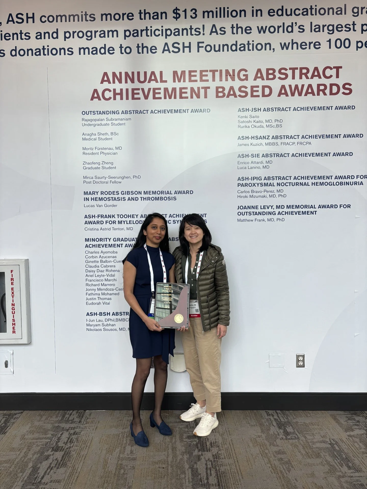

Lab News
News, awards, and lab milestones.
Updates from the Anna Nam Lab and our collaborators.

Latest Highlights
Celebrating lab members and research support.
Use this page for award announcements, new papers, invited talks, trainee milestones, and lab updates.
8/2025 - The Nam Lab is selected for the Pew-Stewart Scholars for Cancer Research.
8/2024 - The Nam Lab is awarded a Starr Cancer Consortium Award with the Len Zon Lab.
Starr Cancer Consortium awards to Weill Cornell Medicine investigators
12/2023 - Mirca received the award for highest ranking abstract among postdoctoral fellows at the 2023 American Society of Hematology Conference.
12/2021 - The Nam Lab is awarded two Starr Cancer Consortium Grants.
Projects were awarded in collaboration with the Mullally, Hormoz, Scandura, Roth, and Roshal labs.
11/2021 - Shira Rosenberg receives the ASH Achievement Award.
Her abstract was selected for a platform presentation.
7/2021 - Andrea Kubas-Meyer is selected as a Hermoine STEM fellow.
5/27/2021 - Anna Nam is selected for the ASCI Young Physician-Scientist Award.
Young Physician-Scientist Awards, 2021
Record number of Weill Cornell faculty win ASCI Young Physician-Scientist Awards
10/6/2020 - The Nam Lab is awarded the DP5 Early Independence Award.
Dr. Anna S. Nam honored with two prestigious awards for early career physician-scientists
5/18/2020 - The Nam Lab is awarded the Burroughs Wellcome Fund Career Awards for Medical Scientists.
Burroughs Wellcome Fund invests in the careers of physician-scientists